Ferrovia - 26 Octobre 2007 - Mise à jour 27 Juin 2017
X 4300 - X 4500
Les premières Caravelles
Les deux premières séries d'EAD comptaient 151 X 4300 (X 4301 à X 4451) et 123 X 4500 produits de 1963 à 1971. Dotés d'un moteur modeste de 330 kW (450 ch) et d'une boite de vitesse mécanique, ces automoteurs sont assez poussifs et inconfortables. Pourtant, lors de leur arrivée sur le réseau SNCF, ils représentaient un certain progrés sur tous les points. Un grand nombre d'autorails de l'époque étaient limités à 300 ch et leur confort était encore plus rustique. L'objectif des EAD étaient de remplacer les couplages de ces autorails avec une remorque sur les lignes aux profils assez faciles par une rame unique, réversible sans manœuvres et plus puissante. Pour faire face à l'affluence, les EAD peuvent même circuler en unité multiple de trois éléments. L'architecture de l'autorail était entièrement repensée. Les nouveaux automoteurs disposaient d'une motrice et d'une remorque non découplable qui possédaient chacun une cabine. Le plancher est plat sur toute la longueur de la rame. La construction des caisses se distinguait des autorails antérieurs par l'assemblage modulaire par soudure d'éléments profilés et par de grandes surfaces vitrées, y compris pour les pare-brise panoramiques des cabines. Ils furent cependant réduits en taille pour éviter les éblouissements et renforcés en cas de chocs frontaux à partir des X 4342 et 4542 ainsi que par transformation sur les éléments déjà produits.
L'unique moteur est un 6 cylindres en ligne couché sur le côté. La SNCF avait retenu deux fournisseurs à part égale : la SGCM (moteur Poyaud) et la SFAC (moteur Saurer). Les X 4300 possédent un Poyaud C6 150 Sr HT de 330 kW (450 ch) et les X 4500 un Saurer SDHR plus puissant (350 kW, 475 ch) mais taré également à 450 ch. Les moteurs Poyaud furent par la suite limités à 295 kW pour des soucis de fiabilité. Hormis le moteur, les deux séries de motrices sont identiques. Le moteur transmet son effort à un seul bogie via une boite de vitesses mécanique à commande automatique De Dietrich. Ce qui n'est pas sans provoquer des à coups lors des démarrages.
La série X 4500 s'est enrichi à 126 engins entre 1973 et 1975 par la remotorisation avec un moteur Saurer des X 4351, 71 et 82 renumérotés X 4624, 25 et 26. Mais elle a perdu l'X 4609 transformé en X 4743. Entre-temps, trois autorails (X 4347, X 4385 et X 4562) avaient disparus dans la catastrophe du tunnel de Vierzy en 1972.
Les remorques XR 8300 et 8500
Contrairement aux apparences, la numérotation des deux séries de remorques XR 8300 et XR 8500 associées aux X 4300 et X 4500 n'a pas de rapport avec la série de la motrice. D'ailleurs les XR 8300 étaient à l'origine numérotées XR 8600 (l'effectif des XR 8500 s'élevant à plus de cent remorques, la tranche fut décalée). De plus, les deux premières rames en service étaient les X 4301-XR 8501 et X 4501-XR 8601(8301). Il y a donc 4 couplages possibles. La différence entre XR 8300 et XR 8500 tient en fait à la répartition 1e/2e classe. les XR 8500 ont un grand compartiment de 1e de 24 places et 49 places en 2nde. Tandis que les XR 8300 disposent de 12 places en 1e et 69 places en 2nde. Les X 4630 ont également des remorques issues de ces deux séries. Si bien qu'il est difficile de connaitre les mariages motrice/remorque car leurs numéros ne correspondent pas. Les passages en atelier ont aussi entrainé de nombreuses permutations en cours de vie.
Fin de carrière
En 2006, il restait environ une centaine de X 4300 et X 4500. La réforme avait commencé par quelques éléments isolés en 1996, dont certains rachetés par des Chemins de fer touristiques. 7 remorques avaient été récupérées pour transformer les autorails postaux XP 94750 en X 4750 classiques. L'amortissement massif a réellement débuté en 1999 et a concerné essentiellement les rames non modernisées. Depuis 2006, le contingent des AGC poussent également les rames lourdement rénovées vers la sortie. A noter que sept X 4300 et huit X 4500 étaient cédées à Ferroviar Keolis, filiale de la SNCF pour poursuivre une seconde carrière en Roumanie.
Les derniers éléments ont été amortis en 2009 hormis l'X 4391-XR 8610 transféré à l'INFRA.
Au final, 33 X 4300 et 36 X 4500 ont été exportés en Roumanie.
Parmi les engins préservés en France, on compte :
L'X 4395 et la XR 8508 préservés par le Train Touristique Doller Alsace.
L'X 4506 par Viaduc 07 (ferraillé en 2013)
Les X 4545, 4554, 4573 et 4607 par le Train du Pays Cathare et du Fenouillèdes
Les X 4567 et 4590 par le Train Touristique du Centre Var
L'X 4620 par Transvap
Engins particuliers
X 4365-XR 8579 : Cet EAD fut retiré du service commercial en 1966 quelques mois à peine après sa sortie d'usine. Il fut transformé en élément XB SD 4365 - X AS 2061. La motrice diésel ne recevait qu'un carénage et une livrée particulière rouge et grise. La remorque était équipée d'une turbine à gaz de 810 kW. Lors de marches d'essais, l'X 4365 démarrait la rame puis le moteur Poyaud était arrété tandis que la turbine de l'XS 2061 prenait le relais. Cette disposition fut reprise pour le fonctionnement des ETG, lesquels étaient à leur début numérotés dans la continuité des Caravelles : X 4700 - XS 4800. Par la suite, l'amélioration de la turbine permit le démarrage sans l'aide du Diésel. Ce qui annonçait les RTG. L'XS 2061 a atteint la vitesse de 252 km/h, plus du double de la vitesse pour laquelle cet engin était conçu à l'origine. Les développements ultérieurs de la turbine à gaz ont conduit à la rame prototype TGV-001. Il existe donc une filiation étonnante entre les poussives Caravelles et le TGV! L'X 4365-XS 2061 fut modernisée en 1971 et pris le nom de TGS (Turbine à Gaz Spéciale). Sa seconde carrière fut dédiée à des trains spéciaux avant sa radiation en 1983.
X 4554 : Cet EAD fut racheté à la SNCF par l'entreprise French Rail Cruise. Luxueusement réaménagé, cet autorail avait pour but d'assurer des voyages touristiques de haut standing à la découverte du terroir du Sud-Ouest. La livrée extérieure originale de l'élément était à base de rouge et de plusieurs teintes de gris. L'expérience a cependant échoué et l'autorail est désormais au Train du Pays Cathare et du Fenouillèdes.
Quelques données techniques
Constructeur : ANF
X 4300
Motorisation : Poyaud C6 150 Sr HT
Puissance : 295 kW
Vitesse limite : 120 km/h
Masse : 54,4t
X 4500
Motorisation : Saurer SDHR
Puissance : 330 kW
Vitesse limite : 120 km/h
Masse : 60,6t
Longueur : 42,480 m
Pour plus d'info :
La fiche X 4300 et X 4500 sur Wikipedia
Fiche technique des Caravelles de Florent Brisou
Les fiches X 4300 et X 4500 sur trains-europe.fr
L'inventaire des X 4300 et X 4500 sur Trains du Sud-Ouest
La section Open archives de la SNCF propose plusieurs documents sur l'XS 2061-X 4365 :
photo,
diagramme de 1967 ou le diagramme de 1972 "TGS"
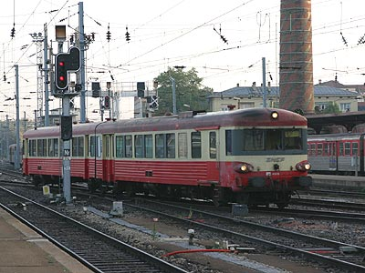
L'X 4325 à Strasbourg (23/10/2004)
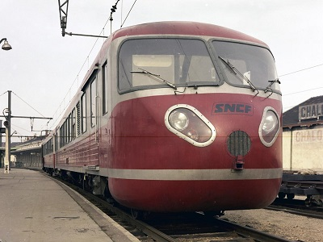
L'XS 2061 / X 4365 expérimental à turbine à gaz
(Chalon sur Saône, 22/01/1969 - © Danis SNCF)
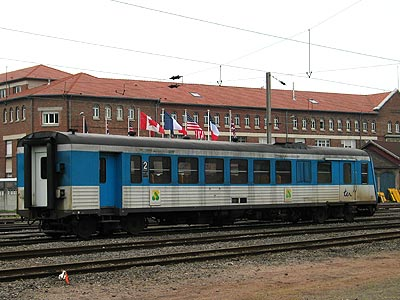
Suite à une avarie, l'X 4412 est isolé. Reims (04/06/2004)
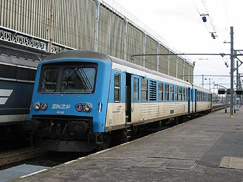
L'X 4438 stationne en gare de Tours (24/12/2002)
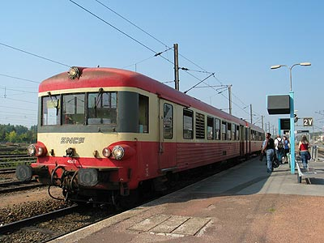
L'X 4587 en gare de Béthune (19/09/2003)
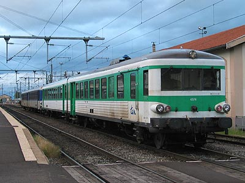
L'X 4574 à Clermont-Ferrand (01/06/2004)
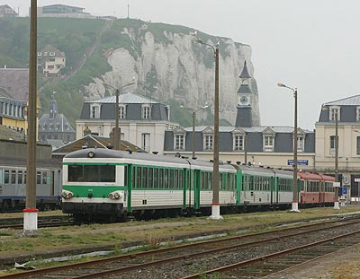
X 4602, 4741 et 4564 sous les falaises du Tréport (14/05/2006)
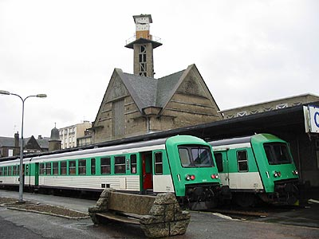
X 4550 et 4615 lourdement rénovés à Dinan (02/11/2002)
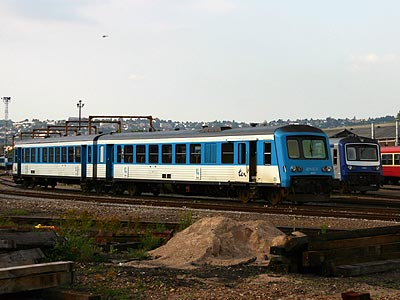
L'X 4597 au dépôt de Sotteville (02/08/2005)
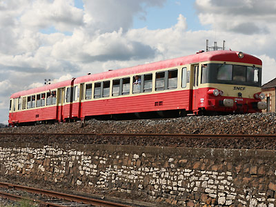
L'X 4395 préservé du TTDA quitte le Festirail de Montluçon (12/06/2010)
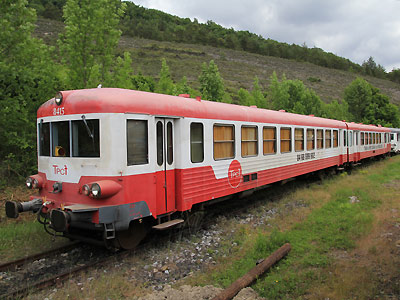
L'XR 8415-X4607 préservé du TPCF à Axat (23/05/2015)
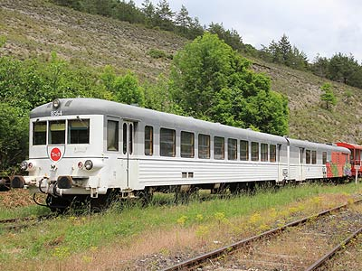
L'XR 8564-X4554 ex-"French Rail Cruise" au TPCF à Axat (23/05/2015)